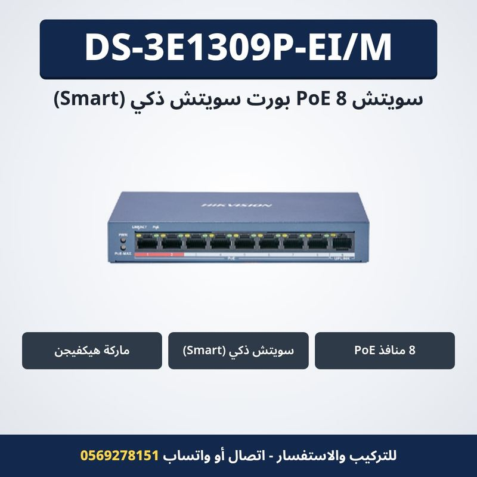

كل المنتجات ← أجهزة الشبكات
الموديل: DS-3E1309P-EI/M

| الماركة | هيكفيجن |
|---|---|
| الموديل | DS-3E1309P-EI/M |
| نوع المنتج | سويتش PoE |
| عام | |
| الهيكل | Metal material, fan-free design |
| الوزن الصافي | 0.4 kg (0.9 lb) |
| الوزن الإجمالي | 0.9 kg (2.0 lb) |
| الأبعاد (عرض × ارتفاع × عمق) | 170.00 مم × 27.60 مم × 93.10 مم (6.69'' × 1.09'' × 3.67'') |
| حرارة التشغيل | من 0 °C إلى 40 °C (من 32 °F إلى 104 °F) |
| حرارة التخزين | من -40 °C إلى 85 °C (من -40 °F إلى 185 °F) |
| رطوبة التشغيل | من 5% إلى 95% (بدون تكثيف) |
| الرطوبة النسبية | من 5% إلى 95% (بدون تكثيف) |
| مصدر الطاقة | 48VDC, 1.35A |
| طريقة التركيب | مكتبي، جداري |
| أقصى استهلاك للطاقة | 65 W |
| الاستهلاك في الخمول | 5 W |
| حماية من التيار المفاجئ | 6 كيلوفولت |
| معايير الشبكة | |
| المنافذ | 8 × 10/100 Mbps PoE port,1 × Gigabit RJ45 port |
| جدول عناوين MAC | 8 K |
| قدرة التبديل | Whole-Device Performance: 5.6 Gbps Port Performance: 3.6 Gbps |
| معدل تمرير الحزم | Whole-Device Performance: 4.17 Mpps Port Performance: 2.68 Mpps |
| الذاكرة المؤقتة الداخلية | 4 ميجابت |
| وظائف البرمجيات | |
| المدى البعيد | Ports 1 to 8: حتى 300 متر. Long range performance may vary depend on camera model or cable condition. |
| HPP | يدعم التفعيل بنقرة واحدة والإدارة عن بعد عبر Hik-Partner Pro. الوظائف: 1. عرض سرعة المنفذ. 2. عرض نسبة استغلال نطاق المنفذ. 3. عرض استهلاك قدرة PoE. 4. عرض معلومات الطوبولوجيا. 5. عرض حالة الإنذار. 6. إعادة تشغيل المنافذ والأجهزة. 7. تفعيل وضع المدى البعيد للمنفذ. 8. ترقية الجهاز عن بعد. |
| عزل المنافذ | Ports 1 to 8: port isolation mode to improve network security Ports in an isolation group cannot communicate with each other, but they can communicate with ports outside the isolation group. |
| صيانة النظام | يدعم إدارة الجهاز عبر الويب وعميل DHCP مفعّل افتراضيا للتخصيص الديناميكي لعناوين الإدارة. يدعم Super IP وهو عنوان ثابت (10.180.190.200) للوصول المباشر. يدعم الإدارة عبر Hik-Central Pro والإدارة عن بعد عبر Hik-Partner Pro. يدعم كشف الكابل: اكتشاف القطع والقصر وطول الكابل. يدعم 802.1ab LLDP لاكتشاف الأجهزة النظيرة. يدعم نسخ المنافذ المرآتي لتحديد الأعطال. |
| مراقب PoE التلقائي | Ports 1 to 8: auto detect and restart the cameras that do not respond. |
| منع الحلقات | منع الحلقات يمنع تكون الحلقات في شبكة التبديل التي تؤثر بشدة على الاتصال. معطل افتراضيا. يدعم 802.1D STP و802.1w RSTP. |
| شبكات VLAN | VLAN is used for network scale planning and network health improvement. Support 802.1Q. Configurable VLAN ID from 1-4094. Support Trunk, Access port mode. Support Max. 4094 VLAN. |
| تغذية PoE | |
| معيار PoE | IEEE 802.3af,IEEE 802.3at |
| أطراف تغذية PoE | تغذية 8 أطراف: 1/2(-)، 3/6(+)، 4/5(+)، 7/8(-) |
| منفذ PoE | PoE: Ports 1 to 8 |
| أقصى قدرة للمنفذ | 30 W |
| ميزانية قدرة PoE | 60 W |
| الاعتمادات | |
| التوافق الكهرومغناطيسي EMC | CE-EMC (EN 55032: 2015+A11: 2020, EN IEC 61000-3-2: 2019, EN 61000-3-3: 2013+A1: 2019, EN 50130-4: 2011+A1: 2014, EN 55035: 2017+A11: 2020) |
| السلامة | CB (AMD1:2009, AMD2:2013, IEC 62368-1: 2014 (Second Edition)), CE-LVD (EN 62368-1: 2014+A11: 2017) |
| التركيب الكيميائي | CE-RoHS (2011/65/EU),WEEE (2012/19/EU),Reach (Regulation (EC) No.1907/2006) |